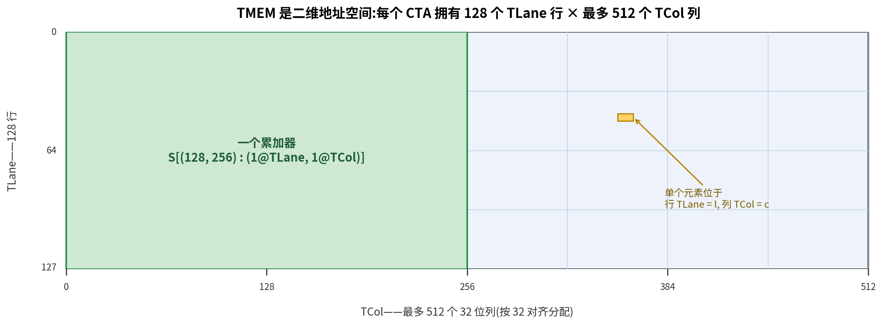
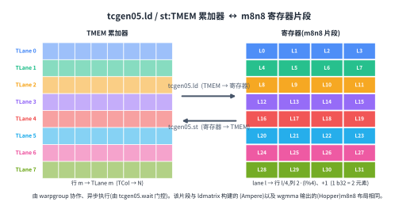

Special Memory: TMEM#
Overview
TMEM is a Blackwell-only memory space used by
tcgen05. It is a two-dimensional scratchpad on each SM, with 128 Lane rows and up to 512 Col columns.tcgen05.mmawrites its accumulator into TMEM. Block-scaled MMA also uses TMEM for scale factors.TMEM is addressed by Lane and Col. In the TIRx layout notation, these two hardware axes are written as
TLaneandTCol.TMEM is not assigned like registers. A kernel must allocate it and free it explicitly, in units of 32 columns.
Ordinary shared-memory loads and stores cannot access TMEM. Data moves between TMEM, registers, and shared memory through dedicated asynchronous
tcgen05instructions.
On Hopper and earlier GPUs, the Tensor Core (Tensor Cores: tcgen05) accumulator lives in registers. That model is easy to reason about. The MMA instruction produces a register fragment, the kernel keeps that fragment live through the compute phase, and the epilogue later reads it, converts it, and stores the result.
The problem is register pressure. Registers are a fixed per-thread resource. As MMA tiles get larger, the accumulator fragment gets larger too. At some point the accumulator starts to crowd out the other values the thread needs to hold. Larger tiles are good for Tensor Core throughput, but keeping the whole accumulator in registers makes those larger tiles harder to use.
Blackwell changes this part of the data path. The accumulator for tcgen05 does not have to stay in registers for the whole compute phase. Instead, tcgen05.mma writes the accumulator into Tensor Memory, or TMEM. TMEM is a memory space that earlier NVIDIA GPUs do not have. It is a two-dimensional scratchpad on the SM, shaped as 128 Lane rows by up to 512 Col columns, and it is scoped to the CTA using it.
That extra memory space lets Blackwell support larger Tensor Core tiles without forcing the entire accumulator into per-thread registers. But TMEM is not automatic in the way registers are. The compiler does not simply hand it out as ordinary register storage. The kernel has to allocate TMEM, address it with the right layout, move data in and out with the right instructions, and free it when the CTA is done.
A 2D Address Space#
TMEM is not a flat byte array. It is a two-dimensional address space. The hardware names its two coordinates Lane and Col. There are 128 Lane rows and up to 512 Col columns. Each Col is a 32-bit column.
That shape matters because tcgen05.mma writes its accumulator into TMEM using this two-dimensional structure. A TMEM location is described by a Lane coordinate and a Col coordinate, not by a single shared-memory-style byte offset.
When a kernel declares a TMEM buffer in TIRx, it gives the buffer a layout over these two hardware coordinates. In the layout notation (Data Layout and Its Notation), we write the TMEM Lane axis as TLane and the TMEM Col axis as TCol. The names are not meant to replace the official hardware terminology. They are layout axis names that make the TMEM dimensions explicit inside the DSL.
For example, an accumulator tile can be written as:
S[(128, N) : (1@TLane, 1@TCol)]
This says that the tile has 128 rows along the hardware Lane dimension and N columns along the hardware Col dimension. In the layout notation, those two dimensions appear as TLane and TCol. The layout is direct: adjacent rows move along TLane, and adjacent columns move along TCol. The figure below shows that grid, with hardware Lane running down the 128 rows and hardware Col across the columns.

The main point is that TMEM is part of the tile layout story. It is not just a hidden backing store for the Tensor Core. The kernel has to name the memory, allocate columns from it, and use a layout that matches how tcgen05 instructions read and write that memory.
Allocation#
Before a kernel can use TMEM, it has to reserve space in it. This is different from registers. Registers are assigned by the compiler. TMEM is allocated explicitly by the kernel.
Allocation is done per CTA. One warp in the CTA requests a range of TMEM columns. The request is made in units of 32 columns, and the requested column count is rounded up according to the hardware allocation rules. After allocation, the CTA receives a base TMEM address. Later tcgen05 instructions use that base address to access the reserved region.
It is useful to think of TMEM as a budgeted CTA resource, much like shared memory. The CTA owns the TMEM columns it has allocated. The kernel decides how many columns it needs for accumulators, scale factors, or temporary staging. When the CTA is done, it must free the allocation.
This makes TMEM part of kernel resource planning. A larger accumulator tile may improve Tensor Core throughput, but it consumes more TMEM columns. Block-scaled MMA may need additional TMEM space for scale factors. The kernel has to fit those uses within the available TMEM budget, just as it has to fit shared-memory buffers within the SMEM budget.
Reading and Writing TMEM#
Ordinary ld.shared and st.shared instructions cannot access TMEM. TMEM is a separate address space, so data moves through dedicated tcgen05 instructions.
There are three main paths.
The first path is tcgen05.ld, which loads data from TMEM into registers. This is the path the epilogue uses after the MMA phase. The accumulator has been produced in TMEM, but the epilogue usually wants a register fragment so it can cast, apply elementwise operations, and store the final result.
At the DSL level, a TMEM load is distributed across a warpgroup. It lowers to four warp-level tcgen05.ld operations, one per warp. Each warp handles 32 of the 128 TMEM Lane rows, so the four warps together cover the full Lane dimension. In the layout notation, that full dimension is the TLane axis.
The instruction itself comes from a family of load shapes, such as .16x64b, .16x128b, .16x256b, .32x32b, and .16x32bx2, with repeat factors from .x1 up to .x128. The chosen shape determines how many TMEM columns are read and how many registers each thread receives.
The important result is the register fragment layout. For the common epilogue path, lane l receives values from TMEM row l / 4 and two columns. This produces the same kind of per-lane accumulator fragment that earlier generations exposed directly from MMA (Tensor Core Operand Layouts Across GPU Generations). That continuity matters. It means the Blackwell epilogue can reuse the same register-level cast and store structure that was already used for Ampere mma or Hopper wgmma, even though the accumulator lived in TMEM during the compute phase.

The second path is tcgen05.st, which stores data from registers back into TMEM. This is the reverse direction of tcgen05.ld. It is used when a thread already holds a register fragment and needs to place it into TMEM. For example, some operands or intermediate values may be staged through registers before being written into TMEM for a later tcgen05 operation.
The third path is tcgen05.cp, which copies data from shared memory into TMEM. This is a bulk copy path, commonly used for scale factors in block-scaled MMA. In that case, TMA or ordinary thread code first prepares the scale data in shared memory, and tcgen05.cp moves it into the TMEM layout expected by the Tensor Core.
All three paths are asynchronous. A tcgen05.ld, tcgen05.st, or tcgen05.cp instruction can return before the data movement has completed. A kernel must therefore use the right completion mechanism before consuming the result or reusing the storage (Async Coordination: mbarriers).
The wait path depends on the instruction. A tcgen05.ld completes through tcgen05.wait::ld. A tcgen05.st completes through tcgen05.wait::st. A tcgen05.cp, like tcgen05.mma, completes through a commit group and an mbarrier. If the data is handed from one set of threads to another, the kernel may also need fences so the receiving threads see the completed writes in the intended order.
TMEM sits in the middle of the Blackwell Tensor Core data path. TMA stages operands into shared memory. tcgen05.mma reads its operands and accumulates into TMEM. For block-scaled MMA, scale factors can also be staged into TMEM. After the compute phase, tcgen05.ld brings the accumulator back into registers, and the epilogue converts and stores the final output.